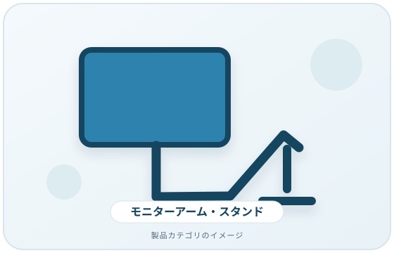
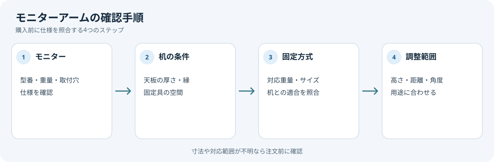

モニターアームやスタンドを買う前に、机への固定方法とモニターの対応条件を確認します。高さや角度の調整範囲は製品ごとに違い、すべての机やモニターに取り付けられるとは限りません。
画像・ボタンはAmazonアソシエイトリンクです。適格購入により紹介料を得る場合があります。

Amazon.co.jpで「モニターアーム スタンド」を探す ↗

取り付け条件を先に照合
- モニターの型番とメーカーが示す重量・取付穴の条件
- アームまたはスタンドが対応する重量と画面サイズの範囲
- 机の天板の厚さ、縁の形、固定具を取り付ける空間
- クランプ式・グロメット式など、固定方式と机側の適合性
- ケーブルを動かしたときの余裕と配線経路
取付規格や対応重量が明記されていない場合は、寸法や見た目だけで互換性を判断せず、メーカーに問い合わせます。
調整範囲を用途に合わせる
米国OSHAのワークステーション資料は、モニター上端を目の高さ付近または少し下に調整すること、画面を読みやすい距離に置くことなどを作業環境の検討点として挙げています。同時に、すべての人に合う唯一の配置はないとも説明しています。身長や机の使い方に合わせて高さ・距離・角度を調整できるかを確認しましょう。
購入前の確認メモ
- モニターの型番・重量・取付穴の条件
- 机の天板の厚さ・縁の形・固定具の空間
- アームの対応重量・サイズ・固定方式
- 必要な高さ・距離・角度とケーブル経路
モニター・机・アームの三者の条件がそろってから候補を比較します。いずれかの寸法や対応範囲が分からない場合は、注文前にメーカーへ確認してください。
購入を保留したいケース
モニターの取付条件、机の天板寸法、アームの対応範囲のいずれかが不明なら、注文前に型番と寸法を確認します。この記事は医療上の助言ではなく、特定製品の安定性試験も行っていません。